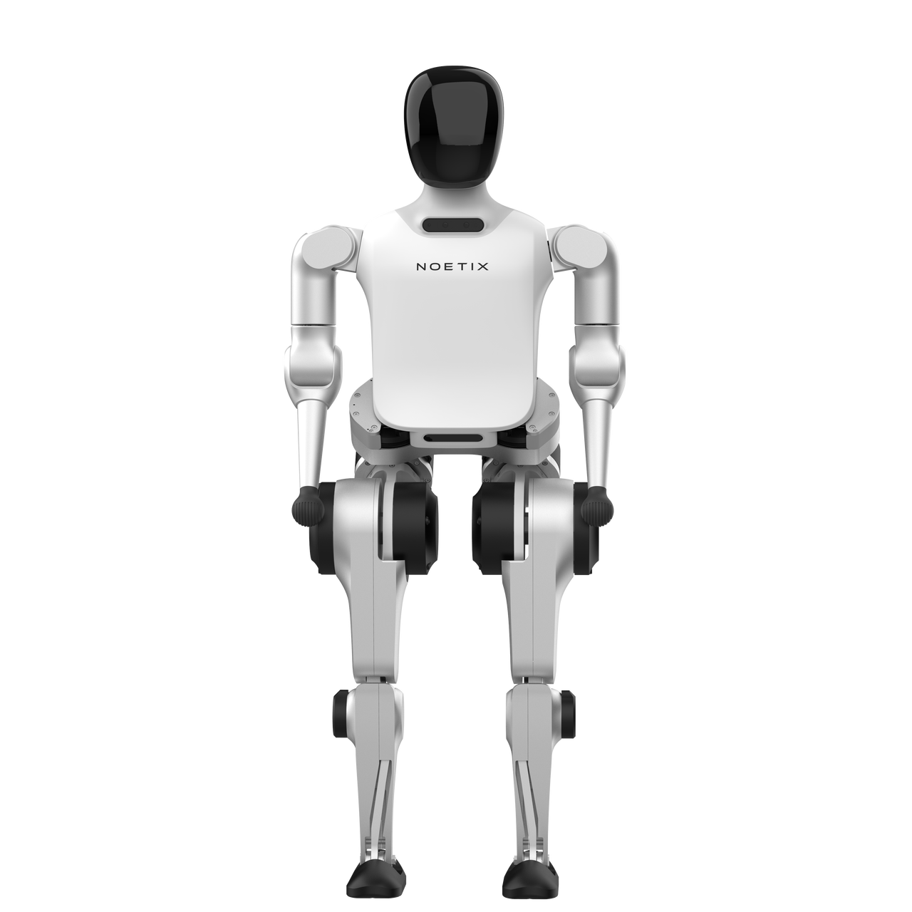

N2教育版（官方文档配置）
松延动力 · 双足人形 · 已发布
紧凑型人形平台。SDK 当前 HTML 与产品图式手册存在身高、自由度和续航口径不一致；批次对应未明确，保留冲突，不默默取最大值。不同文档的开发权限和算力按标准/教育版分开。

完整规格与依据
身体规格
- 身高
- 114 cm 存在冲突 · 厂商资料
SDK 当前站立规格1140 mm；图式手册写118 cm，硬件批次不明，暂保留冲突不参与数值筛选
本项资料核验 2026-10-24 - 整机重量
- 30 kg 已核对原文 · 厂商资料
本次直接读取 SDK HTML 为约30 kg含电池，产品图式手册亦写30 kg（未列电池口径）；搜索缓存另有33.5 kg，暂不把缓存旧值作为当前规格
本项资料核验 2026-10-24 - 自由度
- 18–20 DoF 存在冲突 · 厂商资料
SDK总表18–20，概述/分项合计18，图式手册18；版本/批次映射未清晰，保留冲突
本项资料核验 2026-10-24 - 末端执行器
- 待核实
【待继续采集】N2 教育版（官方文档配置）的末端执行器尚未完成专项深挖。所链仅为产品入口，不是该参数未公开的证明；后续须核对该代手册/配置表或报价，不能从其他代际或零值补齐。
专项核验尚未完成；相关链接不表示厂商从未披露。
运动与操作
- 操作负载
- 5 kg 已核对原文 · 厂商资料
SDK 手臂最大负载，未说明单/双臂、姿态与持续条件
本项资料核验 2026-10-24 - 移动速度
- 3.2 m/s 已核对原文 · 厂商资料
图式产品手册最大奔跑速度；非典型作业步行速度，具体地形/负载未列
本项资料核验 2026-10-24
电池与工作
- 工作时间
- 2–3 h 存在冲突 · 厂商资料
本次SDK直接HTML写约2–3 h；图式手册为1–2 h，任务条件/批次未区分，保留冲突
本项资料核验 2026-10-24 - 电池能量
- 待核实
【待继续采集】N2 教育版（官方文档配置）的电池能量尚未完成专项深挖。所链仅为产品入口，不是该参数未公开的证明；后续须核对该代手册/配置表或报价，不能从其他代际或零值补齐。
专项核验尚未完成；相关链接不表示厂商从未披露。 - 电池容量
- 7,500 mAh 已核对原文 · 厂商资料
本次SDK直接HTML为48 V/7.5 Ah；仅单位换算，搜索缓存52 V/7 Ah不是本次原文，需与采购硬件核对
本项资料核验 2026-10-24
感知与开发
- 感知配置
- 深度相机 已核对原文 · 厂商资料
SDK表列感知传感器；麦克风阵列及扬声器是选配，不由宣传图推断全部标配
本项资料核验 2026-10-24 - 计算平台
- RK3588S（6 TOPS）；Jetson Orin Nano Super（67 TOPS） 已核对原文 · 厂商资料
SDK明确二开算力板仅教育版，不继承给标准配置；TOPS为厂商标称非应用实测
本项资料核验 2026-10-24 - 二次开发
- 支持 已核对原文 · 厂商资料
SDK明确教育版有二次开发接口；接口权限及实际硬件以对应开发指南为准
本项资料核验 2026-10-24
采购信息
- 美元报价
- 待核实
【待继续采集】N2 教育版（官方文档配置）的美元报价尚未完成专项深挖。所链仅为产品入口，不是该参数未公开的证明；后续须核对该代手册/配置表或报价，不能从其他代际或零值补齐。
专项核验尚未完成；相关链接不表示厂商从未披露。 - 人民币报价
- 待核实
【待继续采集】N2 教育版（官方文档配置）的人民币报价尚未完成专项深挖。所链仅为产品入口，不是该参数未公开的证明；后续须核对该代手册/配置表或报价，不能从其他代际或零值补齐。
专项核验尚未完成；相关链接不表示厂商从未披露。
同型号的其他配置 / 代际
- N2 标准配置（官方文档配置）松延动力 · 双足人形